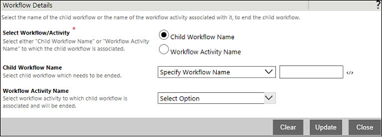

No
Workflow Details property window
This topic gives you a detailed understanding of the Workflow Details properties. The Workflow Details properties are used to specify
To open the Workflow Details window, click the Workflow Details edit button.

This window has the following properties:
Select Workflow/Activity: Select the name of the child workflow that is to be ended or the name of the activity that is associated to the child workflow. Select the Child Workflow Name or Workflow Activity Name radio button.
Property Type: Mandatory (This property must be set.)
Note: You can view the child workflow in the drop-down list only if you have configured the child workflow in the Workflow activity.